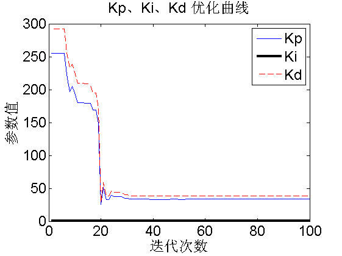

Contents
清空环境
clear
clc
参数设置
w = 0.6;
c1 = 2;
c2 = 2;
Dim = 3;
SwarmSize = 100;
ObjFun = @PSO_PID;
MaxIter = 100;
MinFit = 0.1;
Vmax = 1;
Vmin = -1;
Ub = [300 300 300];
Lb = [0 0 0];
粒子群初始化
Range = ones(SwarmSize,1)*(Ub-Lb);
Swarm = rand(SwarmSize,Dim).*Range + ones(SwarmSize,1)*Lb;
VStep = rand(SwarmSize,Dim)*(Vmax-Vmin) + Vmin;
fSwarm = zeros(SwarmSize,1);
for i=1:SwarmSize
fSwarm(i,:) = feval(ObjFun,Swarm(i,:));
end
个体极值和群体极值
[bestf bestindex]=min(fSwarm);
zbest=Swarm(bestindex,:);
gbest=Swarm;
fgbest=fSwarm;
fzbest=bestf;
迭代寻优
iter = 0;
y_fitness = zeros(1,MaxIter);
K_p = zeros(1,MaxIter);
K_i = zeros(1,MaxIter);
K_d = zeros(1,MaxIter);
while( (iter < MaxIter) && (fzbest > MinFit) )
for j=1:SwarmSize
VStep(j,:) = w*VStep(j,:) + c1*rand*(gbest(j,:) - Swarm(j,:)) + c2*rand*(zbest - Swarm(j,:));
if VStep(j,:)>Vmax, VStep(j,:)=Vmax; end
if VStep(j,:)<Vmin, VStep(j,:)=Vmin; end
Swarm(j,:)=Swarm(j,:)+VStep(j,:);
for k=1:Dim
if Swarm(j,k)>Ub(k), Swarm(j,k)=Ub(k); end
if Swarm(j,k)<Lb(k), Swarm(j,k)=Lb(k); end
end
fSwarm(j,:) = feval(ObjFun,Swarm(j,:));
if fSwarm(j) < fgbest(j)
gbest(j,:) = Swarm(j,:);
fgbest(j) = fSwarm(j);
end
if fSwarm(j) < fzbest
zbest = Swarm(j,:);
fzbest = fSwarm(j);
end
end
iter = iter+1;
y_fitness(1,iter) = fzbest;
K_p(1,iter) = zbest(1);
K_i(1,iter) = zbest(2);
K_d(1,iter) = zbest(3);
end
绘图输出
figure(1)
plot(y_fitness,'LineWidth',2)
title('最优个体适应值','fontsize',18);
xlabel('迭代次数','fontsize',18);ylabel('适应值','fontsize',18);
set(gca,'Fontsize',18);
figure(2)
plot(K_p)
hold on
plot(K_i,'k','LineWidth',3)
plot(K_d,'--r')
title('Kp、Ki、Kd 优化曲线','fontsize',18);
xlabel('迭代次数','fontsize',18);ylabel('参数值','fontsize',18);
set(gca,'Fontsize',18);
legend('Kp','Ki','Kd',1);

